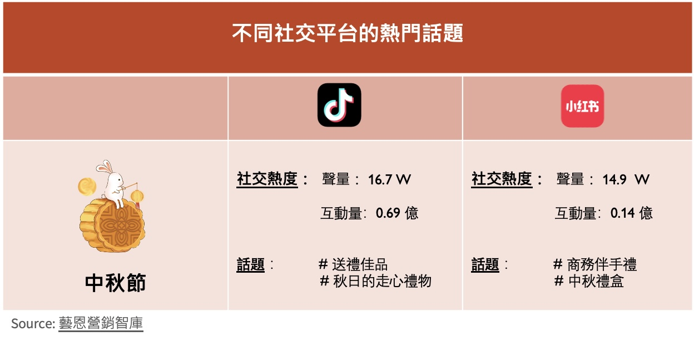

中秋送禮新風尚，月餅成為過去式？
中秋節是中國傳統節日之一，每逢中秋，為長輩挑選禮物是眾多年輕人糾結的一大難題。傳統習俗下，人們會選擇贈送月餅，但今年情況似乎有所轉變。據“馬上贏”數據調查統計，今年中秋節前夕月餅市場銷售不佳。主要門市的月餅類產品銷售額比去年下滑了45.17%， 銷售件數同比下降40.67%， 月餅禮盒銷售件數同比下降49.04%。而這已經是月餅市場連續第二年下滑。
但在不同社交媒體中，中秋節送禮的討論度很高。有關於“送禮佳品”，“秋日的走心禮物”等話題在抖音、小紅書等平台都有著極高的聲量（指在平台上被提及頻率）與互動量。這表明，月餅等傳統食物已無法滿足人們的送禮需求，而儀式感和走心似乎已成為當代人選禮的考慮因素。因此，送禮人在選禮時會有怎樣的考量和憂慮？這成為值得我們研究的話題。
送禮熱潮產生：情景特殊，心意至上
中秋節能掀起如此高的送禮熱潮，有大程度是基於它的場景特殊性。據《2024健康禮贈行業趨勢白皮書》（下稱《白皮書》）的統計結果顯示，節假日是送禮的最高峰時期，大多數人會選擇向他人送禮以慶祝節日的到來；其次為見家長的時候，近一半的人會選擇帶上禮物送給長輩，以表敬意和尊重。
在生病探望、喬遷賀喜、做客等情況下，很多人也會帶上禮物前往，藉此表達祝福和誠意。 而中秋節作為象徵團圓的節日，強調“走心”的送禮文化，贈送父母、長輩及商務夥伴禮品是很常見的。中秋節的這些場景涵蓋了多種送禮需求，因此吸引更多人選擇和贈送禮品。正因如此，中秋節成為了傳統節日中送禮聲量分佈排名第二的節日，僅次於七夕節。
南北方送禮差異：預算有差，觀點有別
南北方在很多日常習俗存在差異，即便是在送禮方面，南北方在花銷以及對送禮的看法也有著一定的區別。首先是價格方面，《白皮書》的報告顯示，南方地區送禮平均預算為767元，而北方地區為822元，兩者相差約50元。通過比較不同預算的人數比例，可以看出大多數人的送禮預算在1000元內。但北方地區在送禮預算超過2000元上比例相比南方更高由此可見，北方人更願意在禮贈上花費。
從送禮的角度來看，南方人儘管在平均預算上較低，但是並不意味他們對禮贈不夠重視。相反，南方人認為“小小禮物略表心意”，禮品的價格並不等同送禮的誠意，真正重要的是發自內心的心意。然而，对北方人来说“一分價錢一份心”，價格的高低某程度上代表準備禮品的誠懇態度。這何嘗不是南北方的一種思維差異呢？
送禮趨勢分析：健康產品領跑，實用性成關鍵
隨著社會健康意識的提升，人們送禮也更傾向於選擇健康類的產品。在年輕人偏好的禮品類型中，健康類產品位居首位。這表明在健康意識高漲的當下，無論是年輕人對長輩的關心，還是長輩的健康需求，健康類產品都成為人們理想的禮物選擇。
其次，食品飲料類位列第二。食品飲料類與健康類都屬於實用性較強的禮品，基本不會被長輩閒置。食品飲料類禮物通常包括健康食品、滋補品和功能性飲品等，它們的受歡迎程度同樣反應了消費者對長輩健康的重視。
相比之下，家用電器類和3C產品類（例如電腦、手機等電子產品）則明顯受到冷落。這可能是因為家電和3C產品屬技術性較強的產品，具較高的使用門檻，送禮者會擔心長輩不熟悉操作或使用不便。同時這類禮品的功能可能更偏向年輕人的需求，難以直接滿足長輩的實際需要。
送禮人選擇禮品時往往也存在各種顧慮。實用性成為長輩們最為關注的因素之一，接近40%的收禮者，尤其是女性，會優先考慮禮物的實用性。他們更希望收到的禮物能為他們的日常生活帶來實際幫助或便利，而不是單純裝飾或者形勢上的禮物。
其次，實用性禮物的價值體現在其長期使用的可能性上。例如一把符合人體工學的按摩椅，一個精准的血壓儀等，不僅能夠在其生活中不斷被使用，還能幫助長輩們更好地關注自身健康。送禮人如果能夠選擇實用性高的禮物，不僅表達了他們對長輩健康的關心，也能夠真正改善他們的生活質量。
“消費觀差異”是另一個重要顧慮，長輩通常更加註重實用性，節儉和性價比。他們更加傾向於選擇耐用，物有所值的產品。而年輕一代則更願意為個性化和高品質買單，他們更希望長輩能通過現代產品享受更高質量和便利的生活。年輕人的這種擔憂實際上是對長輩傳統價值觀的尊重，晚輩在選擇禮物時需要考慮這種傳統觀念，並試圖在表達自己個性和滿足長輩期望之間找到平衡。
根據《白皮書》的調查數據顯示，98%的收禮者偏愛禮品實用性，這反映禮物的實際用途是收禮人最為關注的因素。禮物的品牌口碑也是被關注的重要標準，許多收禮者認為一個具有良好的品牌形象的產品代表著品質的保障和信任感。
同時，29%的收禮者表示注重產品的健康成份，特別是“無添加“類產品。這一趨勢凸顯人們對健康生活方式的重視。無論是食品還是保健品，標榜”無添加“或純天然”的產品更容易贏得人們的青睞，反映出當前消費者對安全、環保和健康的追求日益增強。
總括而言，隨著消費者對實用性和健康的日益關注，傳統的中秋禮品正在發生變化。如今送禮更強調心意的傳達與實際用途的結合，這讓健康類和實用性更高的禮品成為新的主流。其次，無論是年輕一代對送禮的創新理解，還是長輩對實用價值的重視，這種送禮文化的更迭也反映了時代價值觀的更迭。未來的禮物選擇，無論是節日亦或是其他場景，都有可能以此為基礎產生新的變遷。